A Comic History
The allure of the comic book medium is that the comic book artist has a capacity to tell a story in a particular style of art and in a personal tone of voice. Story in a comic book is split into a collection of events: pages and panels and so on, with all panels on a page – or double-page spread – revealed at once. The challenge for the comic book artist is to get the collection of events to read — to get the eye of the reader to flow from one page to the next and from one panel to the next and so on. This gives a visual story a natural progression of time, and, in a comic book, this means to advance the (character in the) story with every turn of a page. The relativity of time in a visual story was summarized by Scott McCloud in 2005 in a TED talk, titled: The Visual Magic of Comics. McCloud said:
“Time has a single unbroken reading line: as you move through space — you move through time. Every element on a comic book page has a spacial relationship to every other element at all times.”
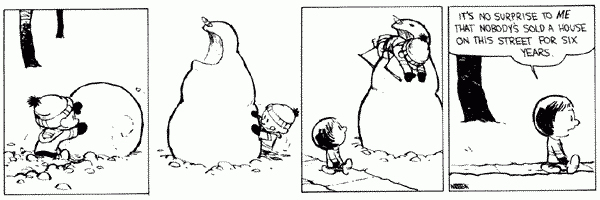
Calvin and Hobbes (November 1985 - December 1995) © Bill Watterson
The sense of time in a comic book is illustrated through sequence. In a sequence of images, there is implicit understanding of what leads up to, and what follows, each image. Take out any one image and the sequence takes on a different meaning. McCloud continued:
“There is also a balance between the visible and invisible in comics. Comics is a kind of [feedback] in which the artist gives you something to see within the panels, and then gives you something to imagine between the panels.”
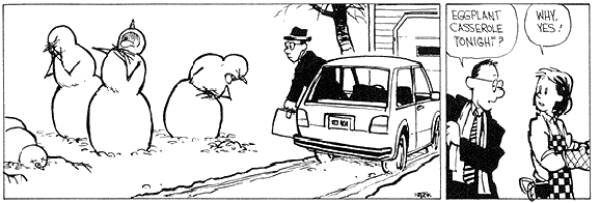
Calvin and Hobbes (November 1985 - December 1995) © Bill Watterson
The page of the book or the moment in the story, the panel, the border, the image, the language and so on — and the space in-between in which all these elements are set to flow together — comprise the tool kit for a comic book artist to visually place and weight the events of a story. Will Eisner wrote the book on comics and sequential art, titled: Comics and Sequential Art: Principles and Practices from the Legendary Cartoonist (2008), in which he summarized the challenge for a comic book artist. Eisner wrote:
“The task then is to arrange the sequence of events (or pictures) so as to bridge the gaps in action. Given these, the reader may fill in the intervening events from experience. [The panel] is used by the artist to capture or freeze one segment in what is in reality an uninterrupted flow of action.”
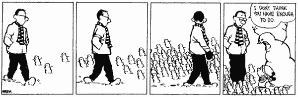
Calvin and Hobbes (November 1985 - December 1995) © Bill Watterson
A visual story represents time. The representation of time in a comic book – in print – however is only just an adaptation, and the representation of time in visual storytelling – in general – is only just entered into a digital space. In his talk, McCloud had described the transition of the comic book medium from print to the screen as an opportunity to return to – as well as to reimagine – the visual continuity of an ancient narrative form. McCloud made the case:
“Comics present a kind of temporal map, and this temporal map […] energizes modern comics. This same principle [operates in] ancient forms of the same idea[:] whether it's paint on stone, like the Tomb of Menna — the scribe in ancient Egypt; or, a bas-relief sculpture rising up a stone column; or, [an] embroidery, or painted deerskin and tree bark […].”
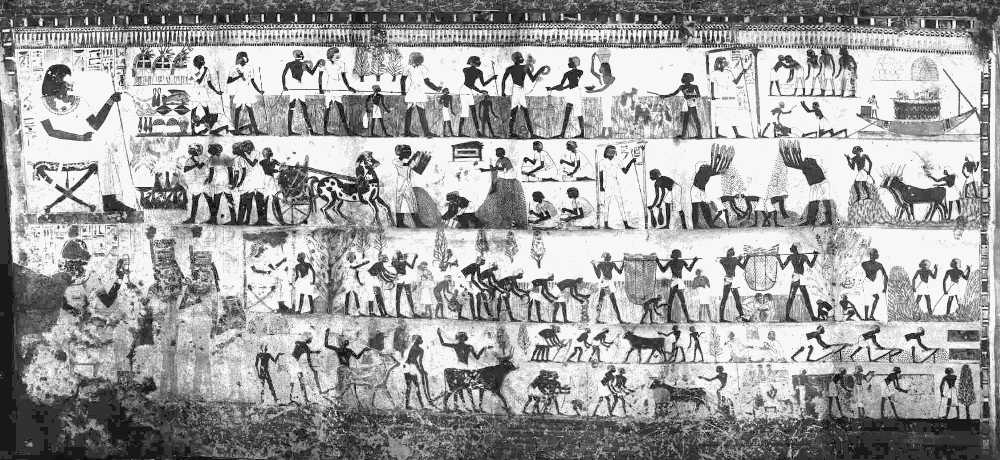
Tomb of Menna – Ancient Egypt
Adjacent images in a book are not necessarily adjacent moments in a story. McCloud noted the compromise that was made when comics were adapted in print. McCloud understood, “the basic idea of comics was being broken again and again and again.” Then, when comic pages were first ported to the screen as is (in the form of pages), McCloud considered this as, “a classic McLuhanesque misktake of appropriating the shape of the previous technology as the content of the new technology.” McCloud elaborated:
“[Digital comics] would resemble print comic pages, and they would introduce all this sound and motion. The problem was that if you go with the basic idea that space equals time in comics, […] when you introduce sound and motion, which are temporal phenomena that can be only represented through time, then they break with that continuity of presentation. […] So the question was: was there any way to preserve that spatial relationship while still taking advantage of all of those things that digital had to offer.”
A screen is not a page, it’s a window to an infinite narrative. This idea is yet to be resolved, and we are yet to see if the sort of changes that happened when comics went from pre-print to print would repeat when comics move into post-print. McCloud explained:
“If you look at the monitor as a page, technically it has the same basic limitation. If you look at the monitor as a window to an infinite canvas, along the ‘X’ axis, ‘Y’ and ‘Z’ axis, with staircases, with circle narratives that can be literally circular, with turns in stories that can be literally a turn, parallel narratives that can be literally parallel.”
This talk: The Visual Magic of Comics by Scott McCloud in 2005 is a playful, personal journey of the comic artist. Ultimately, McCloud was in search of a durable medium for visual storytelling. This search is where we enter in the development of White Elephant.
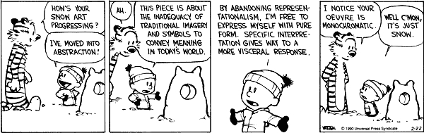
Calvin and Hobbes (November 1985 - December 1995) © Bill Watterson
The snowmen and other snow art is from the last great newspaper comic: Calvin and Hobbes, created by Bill Watterson. The daily comic strip was syndicated from November 1985 to December 1995, and is commonly cited as “the last great newspaper comic”.
A Comic Future
Begin with a look at Bottom of the Ninth — an app with an animated comic book, published in 2012 by Ryan Woodward. The app was released in a moment when Apple iPhone and iPad pervade popular culture — when phone and tablet interfaces, already in constant flux, are in a systematic transition away from a philosophy of skewemorphic design. Somewhere, at some intersection of the philosophy of Marshall McLuhan and of skewemorphic design — the comic book page was appropriated as the interface in an app.
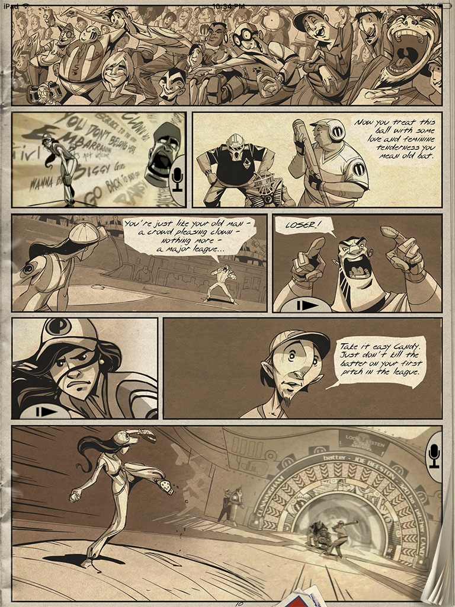
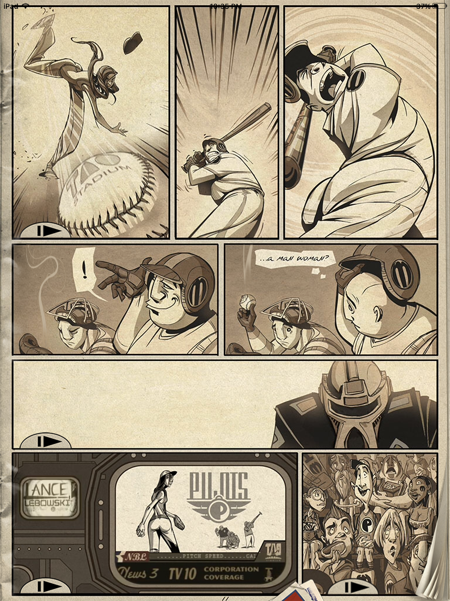
Bottom of the Ninth (2012) p. 10-11 © Ryan Woodward
Bottom of the Ninth (app, 2012) experiments with good effect however with audio and video as temporal phenomena within a digital comic. The app cycles through a mix of background music, folley effects, dialogue and so on. This combination helps to demonstrate that audio in an interactive context is most effective when layered in ambiguity. When audio is modulaled, then sound can play a part in a system of feedback to encourage and reinforce interaction. The app similarly uses a collage of images, image sequences, video clips and so on. The combination of image formats helps to demonstrate that video is likewise most effective when modulated and fitted within a system of interaction.
An alternate example of an app with an interactive visual story is Device 6 — a “surreal thriller” in which the written word is the map, published in 2013 by Simon Flesser. This app appears less like a traditional comic and is not based on a comic. This is the point: this app helps to demonstrate the capacity of the screen as a dimension for storytelling. The typographic narrative turns and breaks and so on with the events as written in plain text. Audio remains ambiguous and only comes into focus at points of inflection in the story, which serves as a cue for attention – or interaction – along the way.
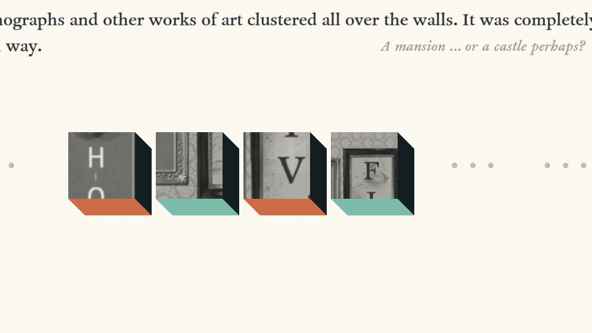
Device 6 screen-05 (2013) © Simon Flesser
We want to pay homage to history of comics as well as to look at technology of today — to help move the art form forward. For this, we turn our attention to interaction design in visual storytelling. We consider the requisite actions that a reader must take to advance through a story, and the implication that each action may have on the story on behalf of the reader.
Once upon a time… in comic books, this was as simple as turning a page. In the digital space, however, this interaction may now default to pinch-to-zoom and swipe-to-pan or tilt or track and so on. This approach means to appropriate an interactive language that is inherent to the technology. For digital comics, this means to resolve the misappropriation of replica page-turns as well as the misappropriation of a click-to-play interface as the standard for video playback. The objective is to seemlessly integrate audio and video elements into each moment of a visual story as outlined in a comic book page layout and panel layout and so on that is in and of itself open to reinterpretation.
Comics have only just entered a digital space, and an augmented reality space has now emerged with a compiled language of interaction. The experience at the core of augmented reality is an extension of digital information into physical space. This computer technology has use cases that are inclined to information systems, and we recognize that visual art and story – and comic books – are not the driving force behind the mixed medium. We also recognize, however, that immersive visual art and story can have an impact on the way we look at wildlife.
Augmented reality adds a layer of interaction, however, the use of an image target in an augmented reality application presents an opportunity to bring the printed comic back into the fold. In the case of a comic book that is extended into an augmented reality space where any digital information can be placed within – and outside of – the comic book panels, the digital information that extends from the printed page can be looked at from any perspective, from the left and from the right and so on. The reader can look into panels, can see outside of the page, and can feel the art and story connected to the world around them. This capability encourages movement around – or manipulation of – the image target in physical space, and this control over the way a story is seen can impart a sense of responsability on behalf of the reader for the direction of the story.
Here, somewhere in this mixed medium of digital and printed comics and augmented reality is where we let the development of White Elephant roam free.
One more thought before we go. Consider the identity of a comic — the core elements that are inherent to the visual storytelling medium, and that transcend any advancement of the art form. We share a closer look at two core elements in comics: the panel and the type.
The Window
The panel in a comic book functions as a stage for the artist to direct the point of view in each moment. The border of a panel acts as a peripheral field of view of the reader, and the shape of a panel outlined by the border – or the absence of a border – is an opportunity to establish the perspective of a scene in each moment. A narrow panel may evoke the feeling of limitation or confinement, whereas a wide panel may evoke the feeling of open space or escape. The shape of the panel in combination with perspective may be used to promote these primitive feelings because we are responsive to our environment. This directionality enables the artist to clarify activity in the story, orient the reader in place and time, and evoke an emotional response and so on. There is an entire chapter about the frame in Comics and Sequential Art: Principles and Practices from the Legendary Cartoonist, in which Will Eisner shares a perspective of the comic panel in a literal context:
“In comics, there are actually two frames: the total page (or screen, in digital comics), on which there are any number of panels, and the panel itself, within which the narrative action unfolds. They are the controlling devices in sequential art.”
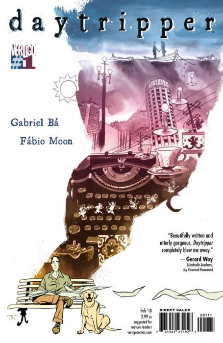
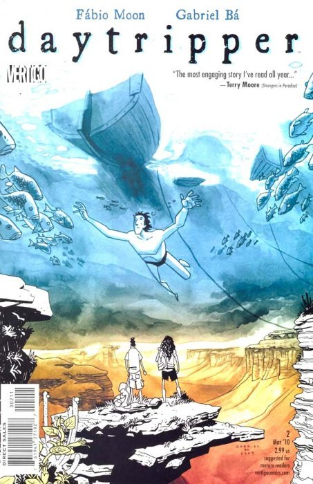
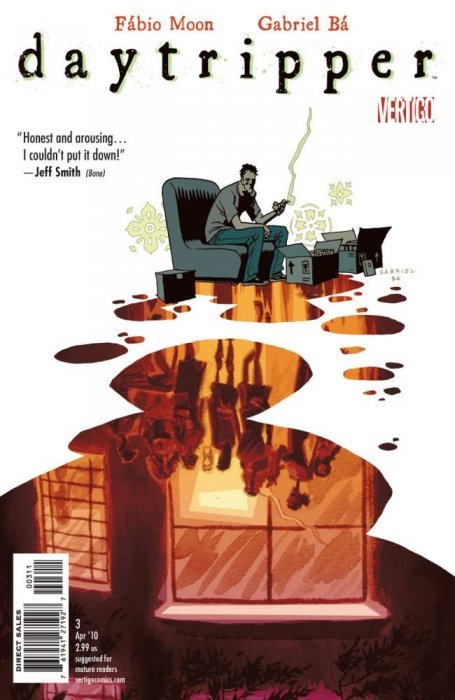
Daytripper (2010) Ch. 1-3 © Fabio Moon and Gabriel Ba
Panels are typically rectangular, historically rigid and repeated as a natural extension of the comic strip format of the newspapers wherein the medium arrived. The most basic panel layout, in which both the shape and size of the panel stay the same, acts to contain the view of the reader, nothing more. The added framing of a single, consistent perspective in a sequence of similar panels is a way to make clear the change in the scene within the panel itself.
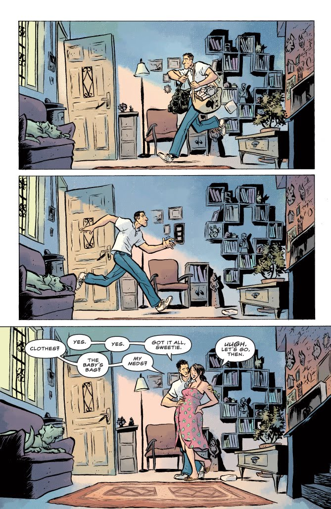
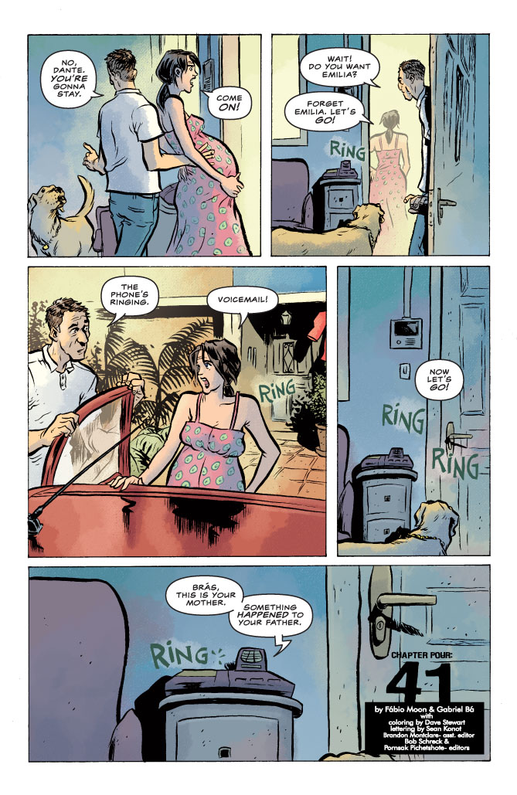
Daytripper p. 83-84 (2010) © Fabio Moon, Gabriel Ba
Alternatively, the comic book, and digital comic, has a capacity for panels with angled borders and cut-out shapes that may suggest a context, an inflection or a movement in a sequence of a story. Eisner also looked at the comic panel in a figurative context:
“[The shape of a frame] can be used to convey something of the dimension of sound and emotional climate in which the action occurs, as well as contributing to the atmosphere of the page as a whole.”
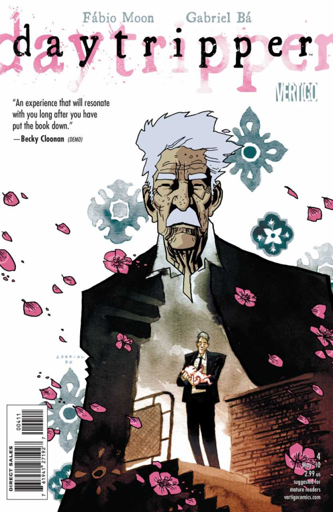
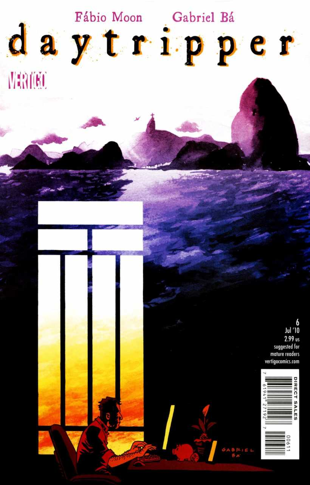
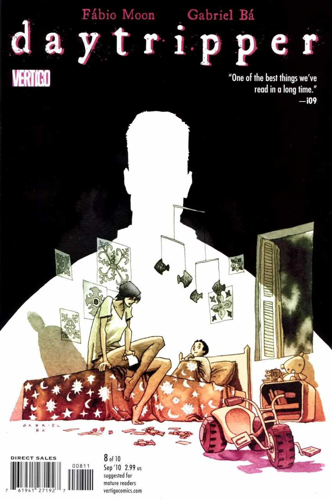
Daytripper (2010) Ch.4, 6, 8 © Fabio Moon and Gabriel Ba
The use of cut-out shapes in panel borders may extend the function of a simple container-panel to encompass the quality of a narrative symbol. The shape of a panel may represent a character, an idea or a setting in the story. A panel border may also function as a structural element in the scene within, or without, the panel itself. Examples include architectural frames such as archways, doorways, tunnels, windows or foreground silhouettes such as mountains, rocks, trees and waterways that may contribute to the shape of a comic book panel, and that are also a structure in the setting of the story.
In the context of augmented reality, the comic book panel has an added use. The frame of the panel helps to provide a visual element to track — to create a more stable experience. The border of the frame serves as a buffer to blend the digital and physical media, and to limit the perceived jitter that comes with the technology.
The cover art and two-page spread above is from Daytripper (comic book, 2011), created by Fabio Moon and Gabriel Ba. The comic book is a masterpiece of color and visual storytelling, and is an Eisner award winner for best limited series. Cited text hereinabove is from Comics and Sequential Art (book, 2008), written by Will Eisner. Eisner was a master of cover pages where the title was worked into the opening panel. His first – now famous – example was cover art for the December 8, 1940 edition of Spirit : “The Haunted House”.
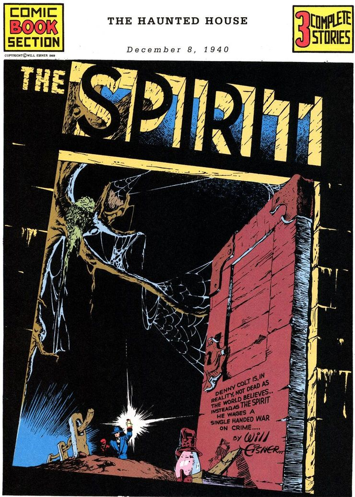
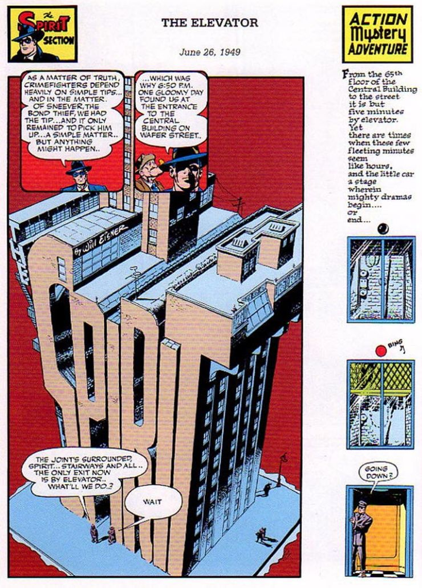
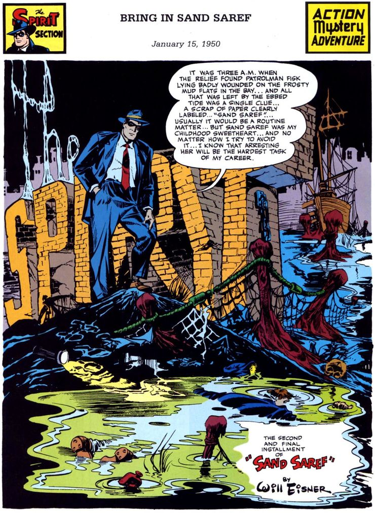
Spirit “The Haunted House” (1940), “The Elevator” (1949), “Bring in Sand Saref” (1950) © Will Eisner
The Word
Words and pictures have a special relationship in comics. The two can combine or conflict with dramatic effect. Both can intersect, and each is interdependent. Sometimes the two are set in parallel paths. Sometimes the two are mixed together in a montage. Words and pictures share a common purpose and a common heritage as graphic symbols.
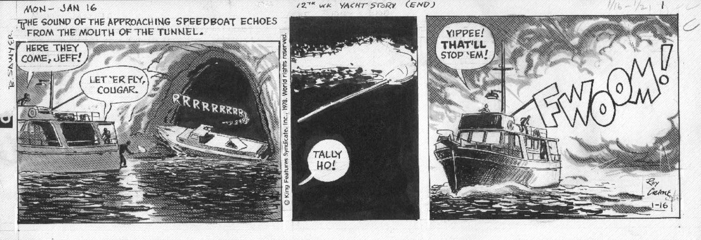
Buz Sawyer (January 16, 1978) © Roy Crane
Roy Crane, the creator of Captain Easy (comic strip, July 1933 - October 1988) and Buz Sawyer (comic strip, November 1943 - October 1989), is credited as a pioneer of the use of onomatopoeic sound effects in comics, adding “bam” and “pow” and so on to what had previously been an almost entirely written word.
The onomatopoeia has developped as a special effect in comics in particular because a handwritten comic script has a capacity for variations in lettering, and the comic art can appropriate the calligraphic quality of the written word. Scott McCloud wrote about the power of the word in comics in his book about making comics, Making Comics: Storytelling Secrets of Comics, Manga and Graphic Novels (2006). McCloud wrote:
“Words evoke feelings, sensations and abstract concepts[;] they're comics' only traditional link with the warmth and nuance of human life. They offer comics creators the opportunity to compress and expand time, and when words and pictures work interdependently, they can create new ideas and sensations beyond the sum of their parts.”
The use of iconography to represent texture and character of sound in comics, even in print, is an attempt to embrace more than its visual medium. The onomatopoetic sound effect can be indicated by size and boldness and so on, by the graphic quality: the shape, line and color of the sound — the roughness, waviness, sharpness, fuzziness and so on, and by association of font styles and shapes that reference or mimic the source of the sound. McCloud, back in his talk, explained the meaning of this abstraction in comics:
“One of the most important things about comics [is] that comics are a visual medium but they try to embrace all the senses within it. So, the different elements of comics like pictures and words, and the different symbols, and everything in between that comics presents are all funneled through the single conduit of vision. So we have things like resemblance, where […] something which resembles the physical world can be abstracted in a couple of different directions: abstracted from resemblance but still retaining the complete meaning, or abstracted away from both resemblance and meaning.”
McCloud then pointed to “language” down that logical line — pointing out that the written word is, “abstracting even further from resemblance but still maintaining meaning.”
Scott McCloud: The Visual Magic of Comics (talk, 2005) and Making Comics (book, 2006) are just two works by Scott McCloud in a career full of contribution to the advancement of the craft of comics. And a final example: another celebrated cartoon and cartoonist, Garfield (comic strip, 1978 - present) was created by Jim Davis. The comic strip is one of the most widely syndicated in the world.
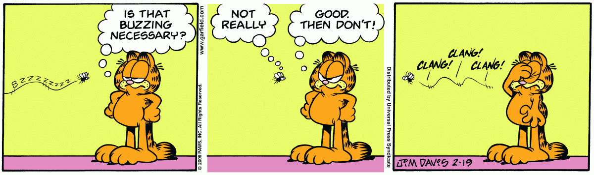
Garfield (February 19, 2009) © Jim Davis
Behind the scenes:
Register for membership behind the scenes of White Elephant.